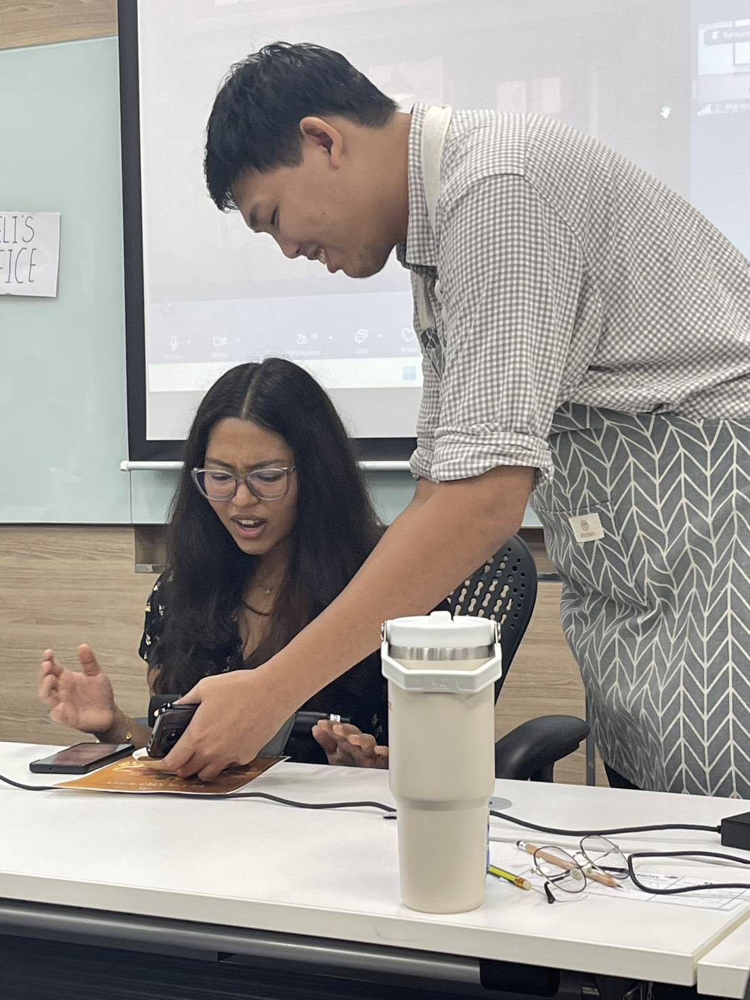
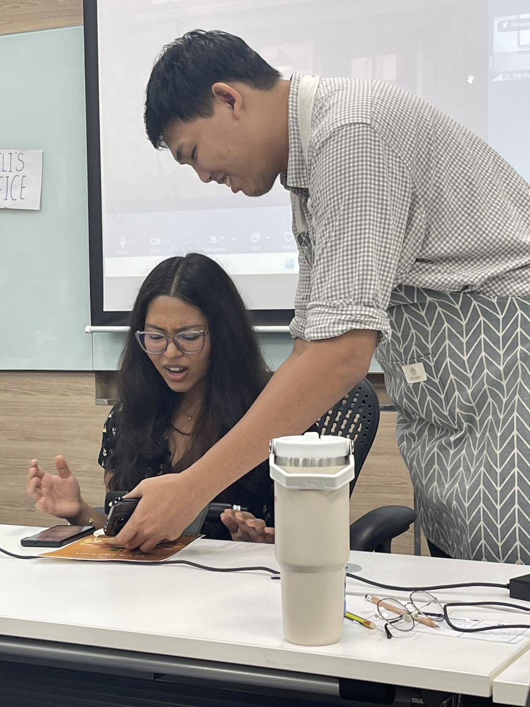

From Code to Collaboration
Zwe Htet
DSAI Department, SET
Agile Thinking in Digital Transformation
Instructor: Stacy Huang

⚡ The Energy & Methodology That Changed Everything
Stacy's Digital Transformation Magic
- • Positive energy that literally spread through the classroom
- • Fast-paced learning using Design Thinking + Lean + Agile integration
- • 10-minute sprint activities that packed more insights than semester-long projects
Methodology Shock
DSAI Approach: 4-month semesters, heavy exams, individual assignments, linear progression
Agile Thinking: Daily iterations, immediate feedback loops, cross-functional teams, continuous retrospectives
"I experienced firsthand why 70% of digital transformation projects fail - not due to bad technology, but due to poor collaboration systems"

üçï Our Team Project: Living the Agile Transformation
The Agile Pizzeria Case Study
- • My character: Zwe - the PM/waiter experiencing information breakdown
- • Business problem: Owner wants pizza, chef only has toast equipment
- • Agile solution: Daily collaboration, psychological safety, rapid prototyping
Our Innovation: "High 5, Help 1"
Inspired by Mel Robbins' "The High 5 Habit"
- • 5 appreciations weekly: Build psychological safety
- • 1 improvement suggestion: Enable continuous learning
- • Result: Transformed from performing to truly collaborating
 
